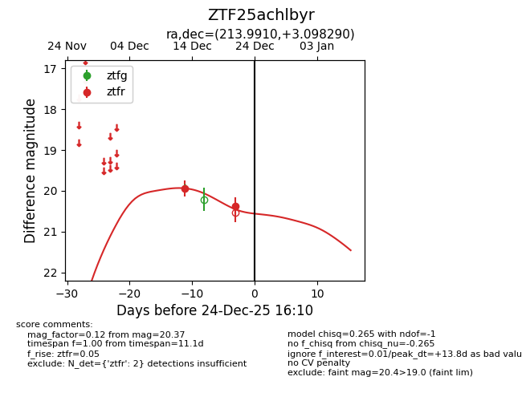
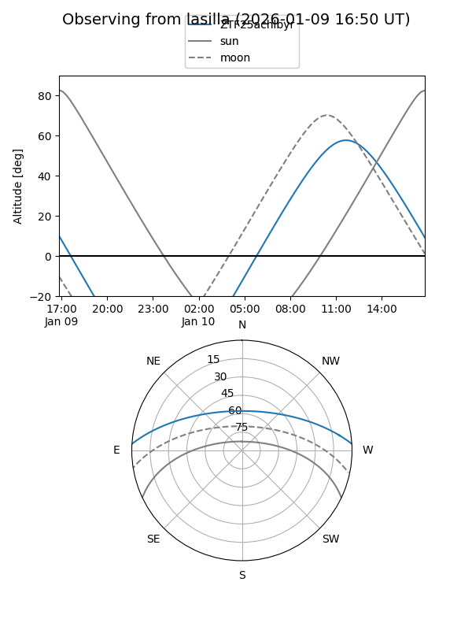
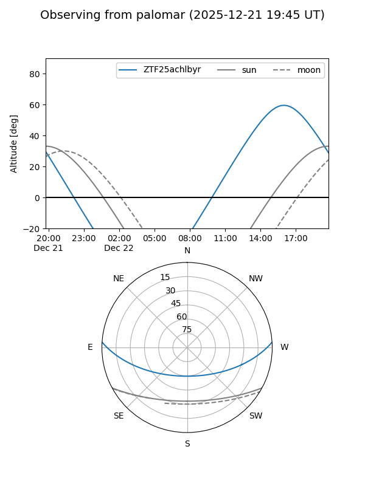
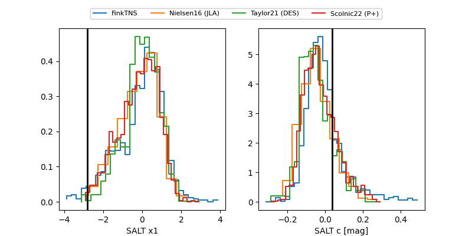

ZTF25achlbyr
Target ZTF25achlbyr at 2025-12-24 16:17
Aliases and brokers:
FINK: fink-portal.org/ZTF25achlbyr
Lasair: lasair-ztf.lsst.ac.uk/objects/ZTF25achlbyr
ALeRCE: alerce.online/object/ZTF25achlbyr
alt names
ZTF25achlbyr (ztf,fink_ztf)
Coordinates:
equatorial (ra, dec) = 213.9910,+3.09829
equatorial (HMS+DMS) = 14:15:57.84,+03:05:53.85
galactic (l, b) = (346.6398,+58.60246)
Flags:
Photometry:
last ztfr=20.37
2 ztfr detections
Lightcurve

Visibility


Additional plots
